PISUKEMAN
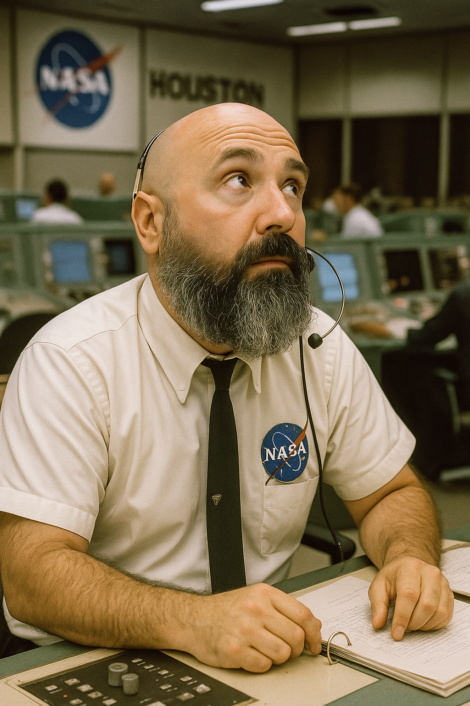
I'm David Regordosa. I love AI and Space, and that's why I created this page — to share the things I do.
- Fundació Ernest Guille i Moliné — Observatori de Pujalt // Board Member
- TEDx Igualada // Co-founder
- Astroanoia // Co-founder
- TIC Anoia // Board Member
ACADEMIC OUTPUT
-
Paper — Planetary and Space Science (2023)
Peña-Asensio · Trigo-Rodríguez · Grèbol-Tomàs · Regordosa-Avellana · Rimola — Deep machine learning for meteor monitoring with transfer learning and Grad-CAM -
Conference — DESEID 2023
Ministerio de Defensa — "IA para la Monitorización de Objetos Aeroespaciales y Bolas de Fuego" -
Conference — Meteoroids 2022
Machine Learning Techniques for Meteor Detection and Tracking
ASTROPICS LAB
AI-powered web tool designed to enhance amateur astrophotography.
FEATURES: Remove noise · Enhance object · Remove/reduce stars · Apply color · Upscale 2x · Intelligent crop · Autostretch · Luminance layers · Change palette · Modify colors · 3D effects · Enhance stars
// DENOISE MODEL
Neural network trained on over 35,000 space images. Removes Gaussian, thermal, cosmic ray, salt‑and‑pepper noise and more by processing 256×256‑pixel blocks and reconstructing a clean, detailed result.

Image divided into small blocks → AI model removes noise per block → blocks reassembled into clean final image.

// STAR REMOVAL MODEL
Reduces or removes stars from images (used to highlight nebulae or deep-sky objects) while preserving fine structural details.
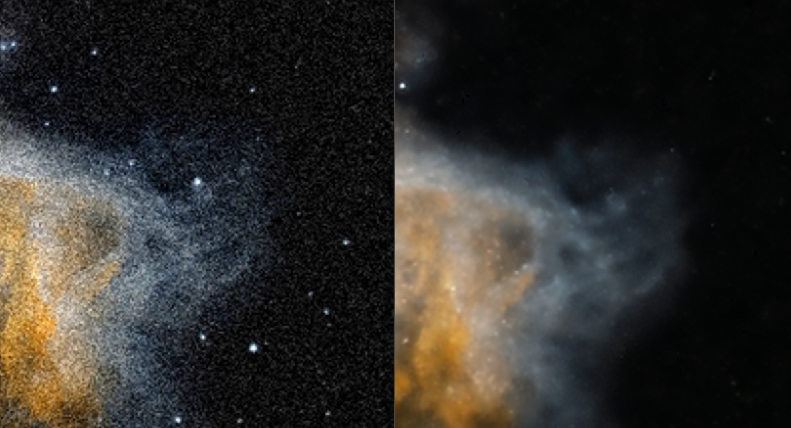
Go take a look at the project :)
This project is called AL in honor of Albert Borras — physicist, meteorologist, director of Pujalt Observatory for 16 years, co-founder of Astroanoia and Anoiameteo, science communicator, and above all, a great friend.
// AD ASTRA DUDE!

MY ASTROPHOTOGRAPHY IMAGES
Taken from my hometown Igualada.
GEAR_01 : ED APO 80mm f/6 Refractor telescope
GEAR_02 : 20cm Newton telescope
SENSOR : ASI 533 MC PRO Color
STACK : Siril
PROCESS : Photoshop
Go take a look at my Instagram account and subscribe! :)
METEOR TRACKING USING MULTI-LAYER GRAD-CAM ANALYSIS
Previously working on a model to detect meteors in images/videos. That model detects if a meteor is present with very high precision.
Extension: not just detect meteors, but track their position using Class Activation Maps (CAM), first introduced by MIT in Learning Deep Features for Discriminative Localization.
// HOW IT WORKS
A CAM is a weighted activation map generated for each image that identifies the region the CNN focuses on to classify the image as a meteor.
Our method: apply Grad-CAM on the last CNN layer → generate Region of Interest (ROI) → analyze inner layers with higher resolution → cross ROI with first-layer activations → precise meteor position. No position labeling required.
Published in Planetary and Space Science — paper here · also on Arxiv.
Example: meteor captured by SPMN — gif, wait for it...

Blue box = ROI from outer CNN layer (low resolution, high accuracy). Red box = weighted ROI from inner layer (high resolution) = the meteor. Frame-by-frame → trajectory.

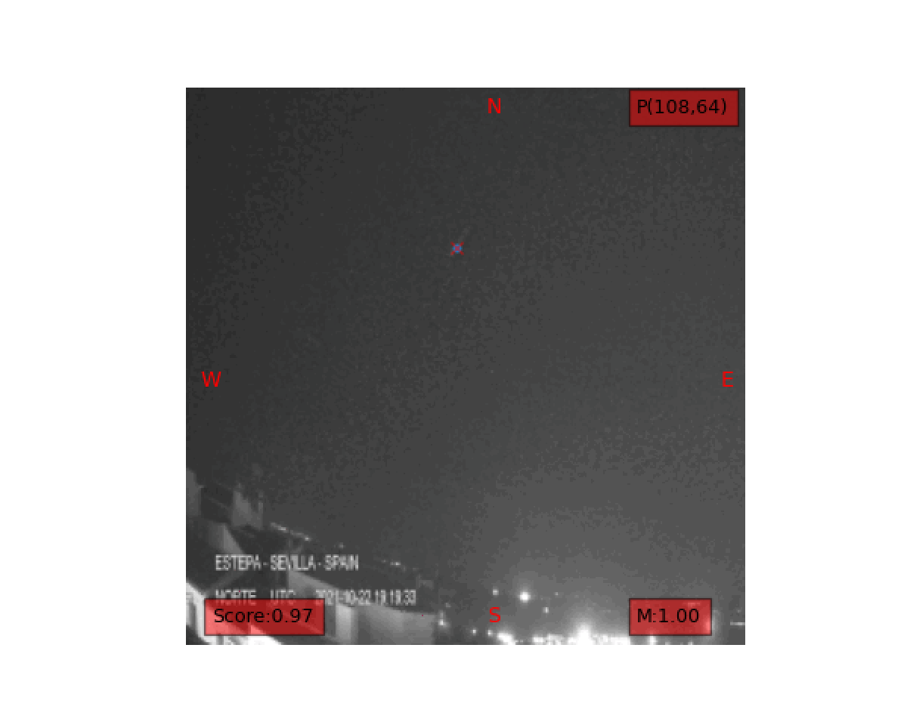
Schema of how the tracking is done by analyzing the ResNET layers:
Code to analyze the Grad-CAM and obtain the weighted array:
cls=0 level=-1 with HookBwd(learn.model[0][level]) as hookg: with Hook(learn.model[0][level]) as hook: output = learn.model(x1) act = hook.stored output[0,cls].backward() grad = hookg.stored w = grad[0].mean(dim=[1,2], keepdim=True) cam_map = (w * act[0]).sum(0) #Normalize the weights avg_acts = torch.div(cam_map, torch.max(cam_map)) #avg_acts: array of weights [0..1] indicating regions of interest in the image #Dimension depends on the layer you're looking at #Repeat for level=-5 (first conv layer of ResNet34) for higher resolution level = -5 #... #Result: two weight arrays at different resolutions
Snippet from the fast.ai CAM notebook.
Example: finding the ROI with Grad-CAM, then selecting the meteor using activations inside the ROI:

// KEY TOPICS
- Pre-trained ResNet34 + Transfer Learning
- Data Augmentation to prevent overfitting
- Multi-layer Grad-CAM enables tracking without position labeling
With this approach any astronomical observatory can easily train its own model and get a tool that detects and tracks meteors without labeling their positions first.
GALAXY M101 WITH SUPERNOVA SN2023IXF
TELESCOPE : 20cm Newton
SENSOR : ASI 533 MC PRO Color
FRAMES : 5 × 180 sec
STACK : Siril / POST: Photoshop
Highlighted in the image: supernova SN2023ixf

BINGMEIMAGES — IMAGE DATASET BUILDER VIA BING API
I was working on models to automatically colorize black and white deep space images. First step: build a dataset.
That's why I built BingMeImages — a custom Python library to build image datasets in bulk.
// PIPELINE
- Query Bing API for images by search term
- Consolidate images from multiple query folders into a single one
- Resize images to a specified pixel size
- Remove duplicates by comparing image hashes
Result: query all Messier + NGC objects → ~3k images, deduplicated, in under an hour.
my_objects = [] for num in range(1, 111): my_objects.append('MESSIER ' + str(num)) for num in range(1, 7840): my_objects.append('NGC ' + str(num) + ' space') # Execute the full process # my_objects : queries to send to Bing API # 200 : images to download per query # ./ufo : folder to store all images # 160 : resize to 160x160 pixels createDataset(my_objects, 200, "./ufo", 160)
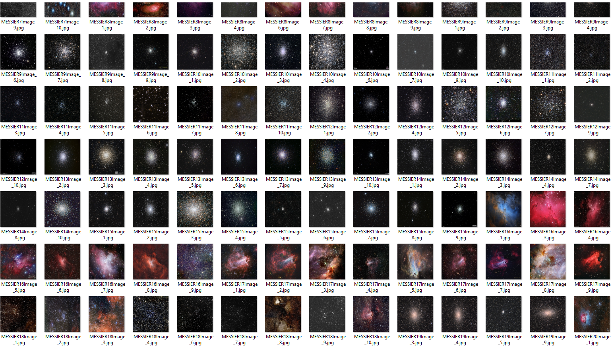
Download the library: BingMeImages on Github
METEOR DETECTION USING TRANSFER LEARNING ON RESNET34
Model to automatically detect meteors in images/videos.
Created using 57,000 images from the Alphasky camera of Observatori de Pujalt, using transfer learning on a pretrained ResNet34.
Dataset imbalance problem (far more no-meteor images) → solved with Data Augmentation. Built with Fast.ai.
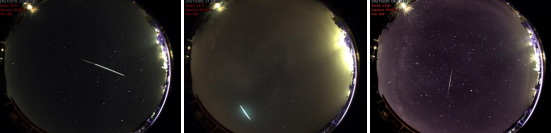
Result: RECALL: 0.98 on meteor detection. Model available: guAIta_latest_version.pkl
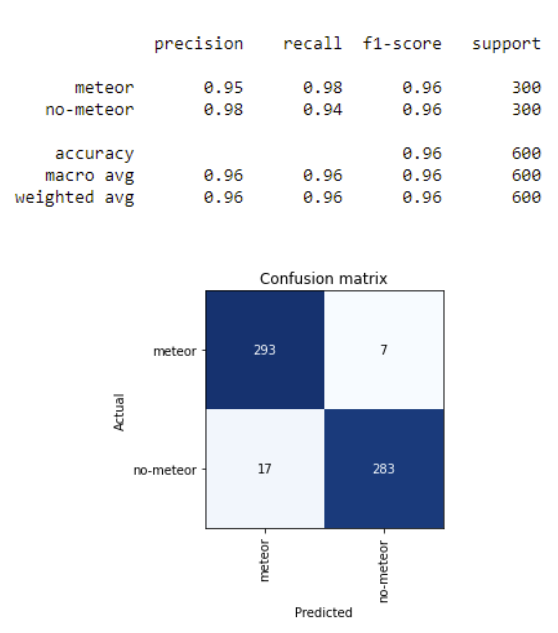
Setup with Anaconda using this yaml file. Inference:
learn = load_learner("guAIta_latest_version.pkl") predict = learn.predict(image) if (predict[0] == "meteor" and predict[2][0] > scoring): #Captured!
Full details in my Master's dissertation (Spanish): GuAIta PDF
// KEY TOPICS
- Pre-trained ResNet34 + Transfer Learning on 57k images — fast and accurate with a reduced dataset
- Data Augmentation to prevent overfitting
USING AUTOENCODERS TO ADD EXPOSURE TO GALAXY IMAGES
Autoencoders: Neural Networks with a specific topology to learn data encodings in an unsupervised manner — dimensional reduction while learning to ignore noise.
Minimum configuration: input layer → hidden "bottleneck" layer (smaller) → output layer (same size as input).
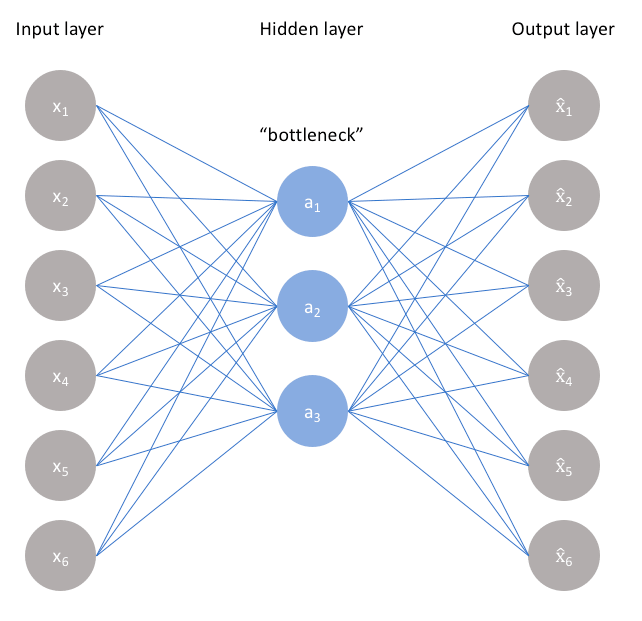
Train on galaxy images to reproduce the input. Dataset: Zooniverse Galaxy Zoo.
Split into encoder (input → latent space) and decoder (latent space → reconstruction):
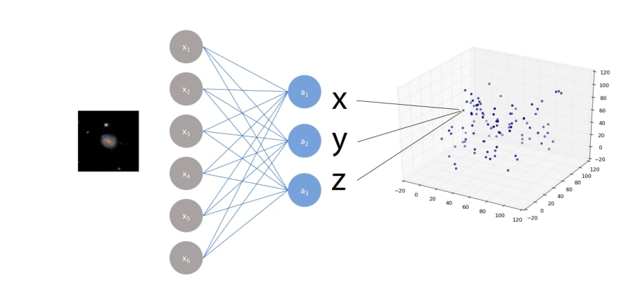
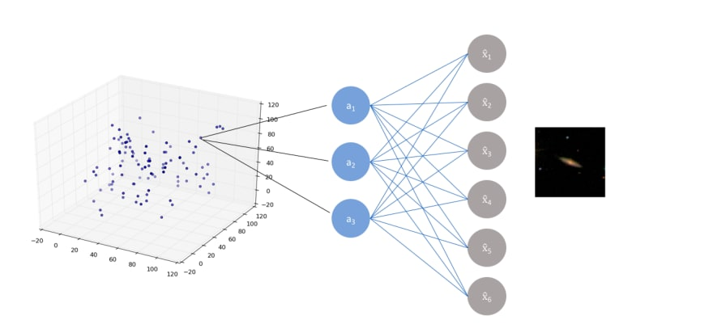
Key idea: train with galaxy images modified to have low exposure as inputs and original galaxy images as the output. The model learns to restore exposure.
Trained on 61k+ galaxy images (106×106 px). Noise removal results on test images (never seen by the autoencoder):
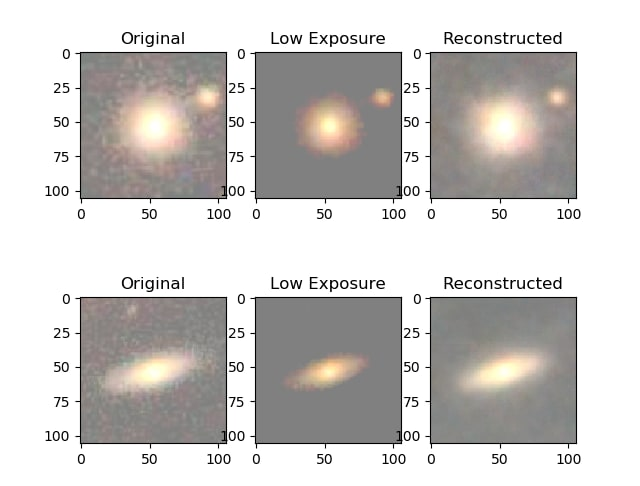
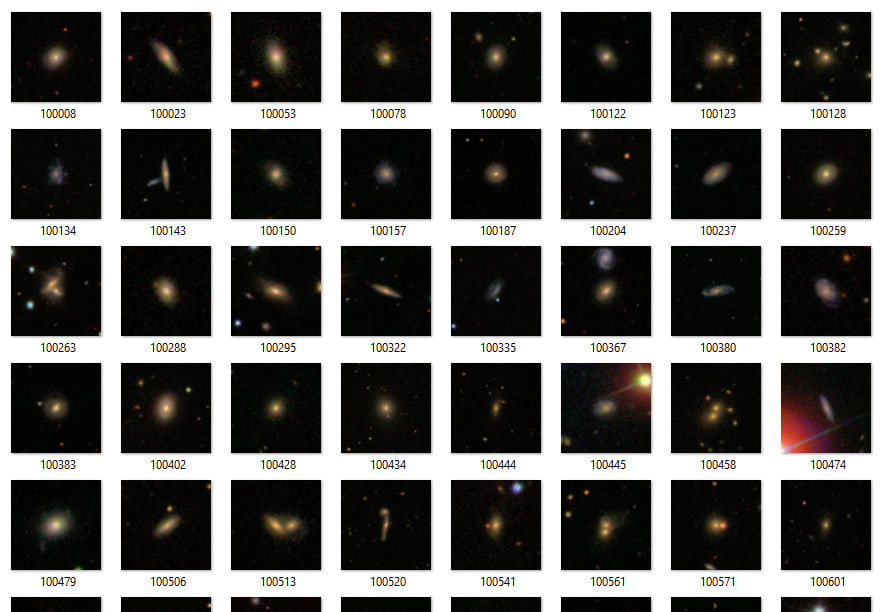
Code — read dataset, simulate low exposure, split:
x_train, x_test = train_test_split(x_train, test_size=0.1, random_state=42) x_train_noise = simulate_low_exposure(x_train) x_test_noise = simulate_low_exposure(x_test) def simulate_low_exposure(x, max, min, perc): return np.where(x - perc > min, x - perc, min)
Define and train the autoencoder:
def build_one_layer_autoencoder(img_shape, code_size): # The encoder encoder = Sequential() encoder.add(InputLayer(img_shape)) encoder.add(Flatten()) encoder.add(Dense(code_size)) # The decoder decoder = Sequential() decoder.add(InputLayer((code_size,))) decoder.add(Dense(np.prod(img_shape))) decoder.add(Reshape(img_shape)) return encoder, decoder # Bottleneck at 1000 nodes encoder, decoder = build_one_layer_autoencoder(IMG_SHAPE, 1000) inp_shape = Input(IMG_SHAPE) code = encoder(inp_shape) reconstruction = decoder(code) autoencoder = Model(inp, reconstruction) autoencoder.compile(optimizer='adamax', loss='mse') # Train: noisy low-exposure input → clean output history = autoencoder.fit( x=x_train_noise, y=x_train, epochs=10, validation_data=[x_test_noise, x_test] )
Originally posted at: dev.to